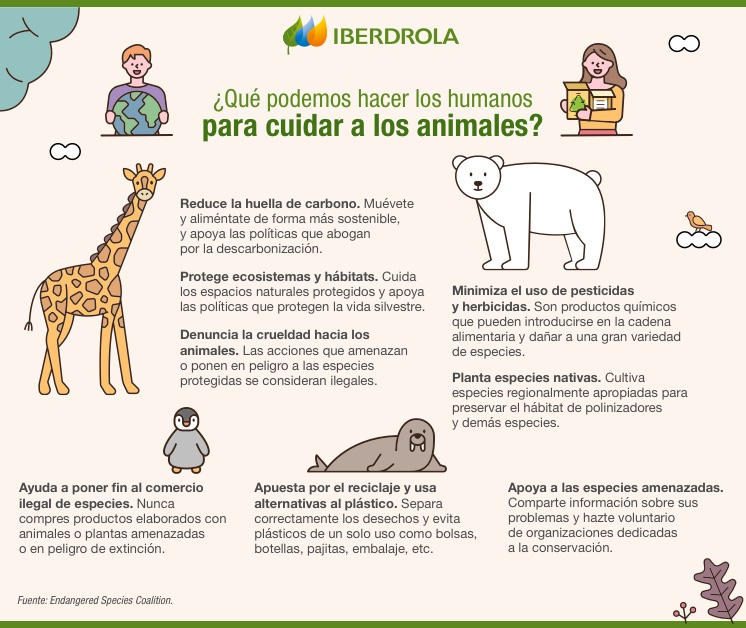

*El abusivo e insostenible uso de los recursos naturales no solo daña la salud del planeta, sino que arrasa con especies enteras y las hace desaparecer para siempre. La frenética perdida de biodiversidad hace que un millón de animales y plantas estén amenazadas actualmente. Otras, corrieron peor suerte. A continuación, repasamos algunas de las especies extintas que ya solo podemos rememorar.

*Contaminación: como causa generada directamente por el hombre, cada uno de los tipos de contaminación ha generado daños en los ecosistemas donde hacen vida los animales. La contaminación marina, por ejemplo, ha causado que las anillas de plástico de las latas se conviertan en un residuo peligroso para tortugas, gaviotas, peces y otros animales relacionados al ambiente acuático.